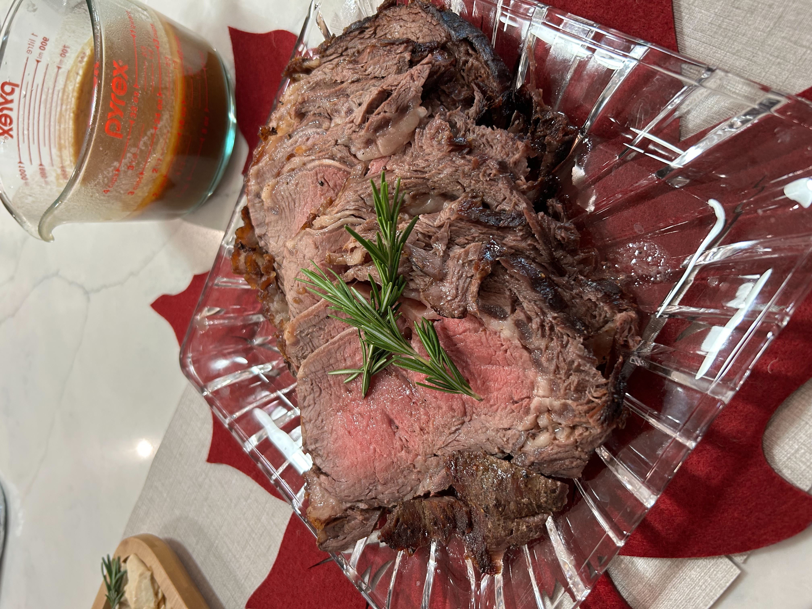

Prime Rib

Ingredients
- 4-6 lb boneless prime rib
- 3 tbs kosher salt
- 2 tbs pepper corns, freshly cracked
- 2 tbs beef fat or beef tallow
Directions
- Prep Roast: Wash and dry the roast. Wrap in cheesecloth and refrigerate uncovered for 3-5 days. On cooking day, unwrap and bring to room temperature.
- Trim & Season: Trim fat cap to about ¼" and score the top. Coat with beef fat or oil and season generously with salt and pepper.
- Slow Roast: Place on a rack in a cold oven. Heat oven to 250°F and roast until internal temperature reaches about 118–120°F, about 3 hours.
- Rest & Sear: Remove roast and rest briefly. Sear on all sides in a hot pan.
- Finish: Transfer to a 500°F oven and cook until internal temperature reaches about 128°F.
- Serve: Rest, slice, and serve.
Chef's Notes
- Mix salt and cracked black pepper together before seasoning to ensure even distribution.
- Rub roast with beef fat, then apply seasoning mixture evenly, pressing it into the surface.
- This method allows fond to develop in the pan to create a rich base for an excellent pan sauce
- Cook to preferred temperature; about 128°F yields a perfect medium, but adjust as desired.
The Gumbo Page
Michael Fritsche
mbf@fritsche.org